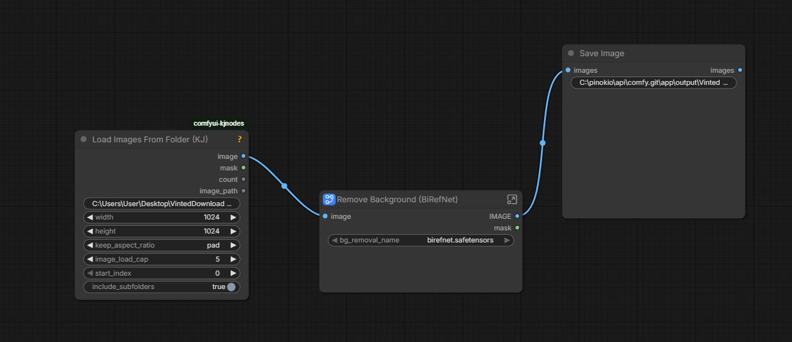
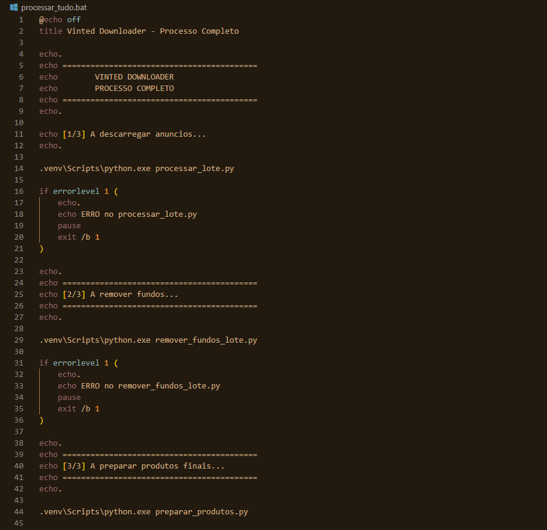
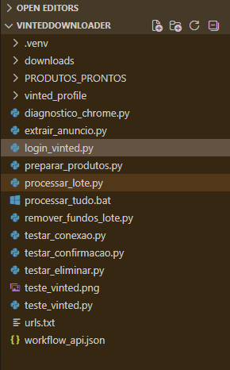
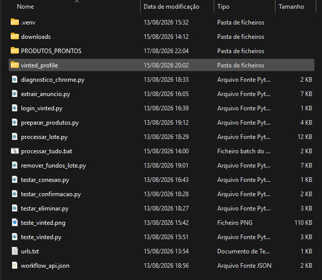

Automation / E-commerce
Vinted Workflow Automation
Personal Automation Project
A personal automation project designed to streamline repetitive Vinted workflows, reduce manual tasks and improve efficiency across marketplace operations.
Project Overview
Vinted Workflow Automation
Project Focus
Personal workflow automation designed to simplify repetitive Vinted marketplace operations and reduce unnecessary manual work.
Workflow
The project combines automation, structured workflows and practical testing to make recurring marketplace tasks faster and more consistent.
Objective
Improve efficiency when managing repetitive Vinted activities while maintaining a practical and reliable workflow.
Analysis
Challenges
Challenge 1
Repetitive marketplace tasks required unnecessary manual work.
Repeating the same actions across Vinted workflows can consume time and make routine operations less efficient.
Challenge 2
Workflow consistency was difficult to maintain manually.
A more structured process was needed to make recurring operations faster, more predictable and easier to manage.
Challenge 3
The workflow needed to remain practical and reliable.
The automation had to reduce manual effort without making the process unnecessarily complex.
Solution
Workflow Automation


Automation Process
Script-based workflow coordinating repetitive marketplace operations and reducing manual processing.

Processed Files
Structured files generated during the workflow, keeping product assets organized and ready for the next stage.

Final Results
Processed product images prepared for use in Vinted listings.
Approach
I designed a practical automation workflow to reduce repetitive Vinted operations and make recurring marketplace tasks faster and more consistent.
Workflow Structure
The workflow separates repetitive actions into clear steps, allowing tasks to be executed in a more structured and predictable way.
Automation Focus
- Reduce repetitive manual actions
- Improve workflow consistency
- Reduce time spent on routine marketplace tasks
- Keep the process simple and practical
- Support more efficient digital operations
Implementation
Practical Testing
Testing
The workflow was tested through repeated marketplace scenarios to identify unnecessary manual steps and improve the sequence of operations.
Iteration
The process was refined to keep the automation reliable while avoiding unnecessary complexity.
Results
Results & Validation
Result 1
Reduced repetitive manual work.
The workflow was designed to reduce the number of repeated actions required during routine Vinted operations.
Result 2
Improved workflow consistency.
Structuring recurring tasks into a defined workflow makes the process easier to repeat and maintain.
Result 3
More efficient digital operations.
The project demonstrates how practical automation can simplify repetitive marketplace activities without requiring an overly complex system.
Skills demonstrated
- Workflow automation
- Process optimization
- Task automation
- Digital operations
- Workflow design
- Testing & troubleshooting
- AI-assisted workflows
- Attention to detail